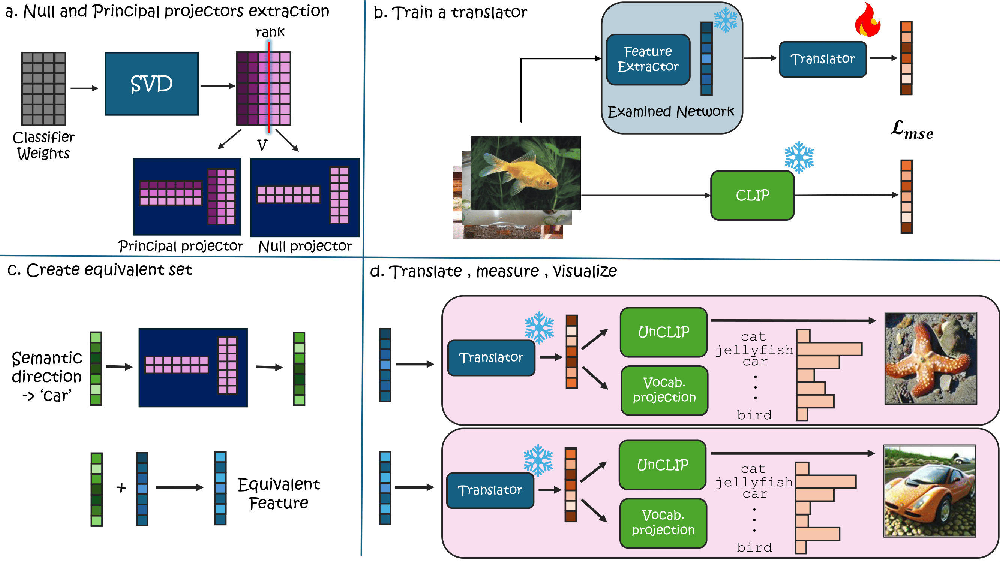

SING: Analyzing Semantic Invariants in Classifiers
CVPR 2026
Project page for SING.
Project page for SING.
All classifiers, including state-of-the-art vision models, contain invariants induced by the geometry of their linear mappings. These invariants reside in the classifier null space and produce equivalent inputs with identical outputs.
SING (Semantic Interpretation of the Null-space Geometry) translates this hidden geometric behavior into human-interpretable semantics by mapping classifier features into a multimodal space and quantifying semantic drift. The framework supports single-image analysis and model-level comparisons.
You can replace each card image with a cropped panel later. For now, all cards use `figs/method.png`.

Decompose classifier-head weights with SVD to obtain principal and null subspaces.
Map classifier features into a shared vision-language embedding space.
Construct equivalent features by null-space projection/manipulation while preserving logits.
Quantify semantic drift and visualize induced changes across attributes/classes.
Main codebase: SING-analyzing-semantic-invariants-classifiers
A full camera-ready page update (figures, links, bib details, video/demo embeds) will be added once available.
@inproceedings{sing2026,
title={SING: Analyzing Semantic Invariants in Classifiers},
author={TBD},
booktitle={CVPR},
year={2026}
}